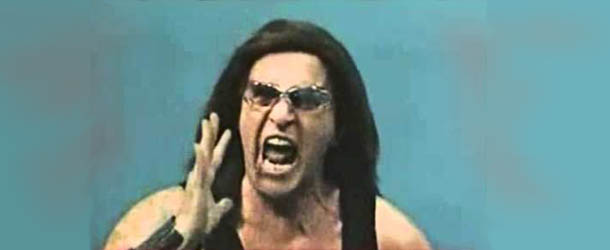

NEWS
salta contenutoB & Trio Pauer: Fuoco a Carmignano!
di Alberto Andeliero 20/01/2014In occasione della "fuoriuscita" del nuovo singolo "fuoco a carmignano!", i trio pauer hanno concesso un'intervista per Music Break in esclusiva.
continua →Intervista esclusiva a Wolfgang Amadeus Mozart
di Alberto Andeliero 20/01/2014
Questa è la prima intervista in assoluto che abbia mai realizzato.Spero dunque che mi perdonerete nel caso non fossi stato all'altezza (tenete poi conto che avevo Mozart di fronte; non capita tutti i giorni)! ;)Ma non perdiamo tempo in chiacchiere inutili; procedo subito a riportare l'intervista effettuata.Bando alle ciance!!!
continua →Slash: «Adesso sono una persona tranquilla e bevo solo acqua». Intervista esclusiva
di Alberto Andeliero 20/01/2014
In occasione della tournée italiana per il nuovo album da solista Apocalyptic Love, ci siamo fatti raccontare dal chitarrista la sua nuova vita, senza eccessi ma con la stessa voglia di suonare...
continua →Zakk il selvaggio!
di Alberto Andeliero 20/01/2014
Zakk Wylde non ha certo bisogno di presentazioni, stiamo parlando di uno dei più amati chitarristi rock delle ultime due decadi per quanto fatto alla corte del Prince Of Darkness Ozzy Osbourne. La release di questo lavoro ci offre l’opportunità di scambiare quattro chiacchiere con Zakk Wylde in persona, persona di poche parole ma estremamente sicura dei suoi obiettivi.
continua →Actionmen, Europa e punk-rock
di Alberto Andeliero 20/01/2014Per tastare il polso alla giovane scena rock ravennate abbiamo fatto una chiacchierata con due componenti del quartetto ravennate Actionmen, Matteo Pozzi e Diego Pasini, rispettivamente chitarra/voce e basso di una band completata da Ram Das Libero Foschi (chitarra e voce) e Mattia “Pinna” De Paoli (batteria).Per chi non li conoscesse, gli Actionmen sono un gruppo che suona principalmente pezzi punk-rock e sono conosciuti anche all'estero. Il loro debutto – l'album The Game (2005) pubblicato da Unicorn Records – gli ha dato l'opportunità di emergere e farsi conoscere da un pubblico eterogeneo.
continua →Richard Benson uno Svitato!
di Alberto Andeliero 20/01/2014 Per tastare il polso alla giovane scena rock ravennate abbiamo fatto una chiacchierata con due componenti del quartetto ravennate Actionmen, Matteo Pozzi e Diego Pasini, rispettivamente chitarra/voce e basso di una band completata da Ram Das Libero Foschi (chitarra e voce) e Mattia “Pinna” De Paoli (batteria).Per chi non li conoscesse, gli Actionmen sono un gruppo che suona principalmente pezzi punk-rock e sono conosciuti anche all'estero. Il loro debutto – l'album The Game (2005) pubblicato da Unicorn Records – gli ha dato l'opportunità di emergere e farsi conoscere da un pubblico eterogeneo.
continua →